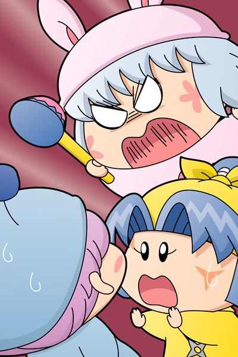

ムルモ「皆しゃ～んっ、ボクの活躍はいかがだったでしゅか～？」
ヤマネ「さすがはムルモ殿。
素晴らしい推理でございました！」
パピィ「何言ってんのよ！
最後の方はあんた何もちてないじゃないのっ！」
ムルモ「な、何でしゅか、いきなり・・・」
パピィ「これだからムルモはいつも詰めが甘いって言われるのよ」
ムルモ「そういうパピィだって途中から全然出てこなかったじゃ
ないでしゅか」
パピィ「あたちは初めからそういう役なのよ。
事件を解決できない探偵と一緒にちないでくれる？」
ムルモ「ボクはヤマネしゃんのためを思ってあえて黙っていたんでしゅよ」
と偉そうなポーズを取るムルモ。
ムルモ「頭脳派の探偵役はボク以外には無理でしゅからね。
パピィには脇役がぴったりでしゅ」
パピィ「・・・ムルモのくせに・・・生意気よ！！！」
ヤマネ「ムルモ殿、パピィ殿、ケンカはだめでございますっ」
パピィ「これでも喰らいなちゃ～～いっ」
ムルモ「！！」
パピィはぐっすりおやすみハンマーを持ってムルモに飛びかかりました。

ヤマネ「ムルモ殿、危ないでございます！！」
ぴこっ
ムルモ「や、ヤマネしゃん！」
ヤマネ（くー、くー、・・・）
パピィ「えっ、このハンマーは本物だったの？」
ムルモ「ボクも知らなかったでしゅ・・・」
倒れ込んだヤマネを前にして、顔を見合わせて慌てるムルモとパピィでした。
『お菓子への招待』の後書きです。誰に向かってムルモは「皆しゃ～んっ」とアピールしているかは謎ですが、楽屋裏(?)で３人がいろいろとお話をしています（他の妖精は別の場所でおしゃべり中）。そこでまた第４の事件が発生しちゃいました(笑)。
今回はやたらと連載に時間がかかってしまい申し訳ありませんでした。作文が苦手な私は毎回ストーリーを文章化するところでかなり時間がかかってしまいます。その割には読みにくい文章なので、次回は文章短めの絵でアピールするストーリーに挑戦しようと思います。ちなみに新しいストーリーは今回の絵に登場している３人の誰かを主役にする予定。連載までもう少しお待ちくださいね。
(2009/4/4)